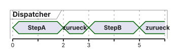
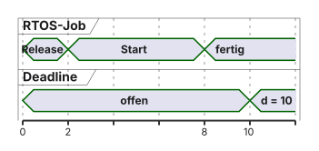
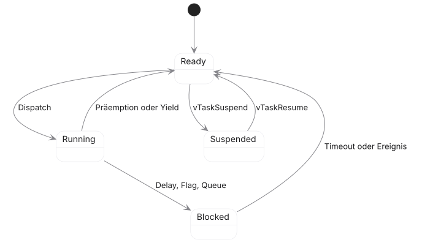
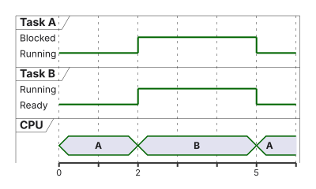
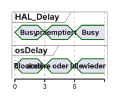
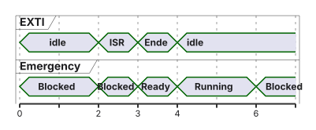

03 · Einführung in Echtzeitbetriebssysteme
FreeRTOS und Task-Management · EZS · DHBW Stuttgart
Prof. Dr.-Ing. Daniel Klünder
Willkommen in der Profiliga!
Dritter Termin: vom Dispatcher der Vorlesung 2 zu einem Kernel
Heute: ein FreeRTOS auf dem Cortex-M4 des STM32H755
Der CM7 übernimmt die im Projekt dokumentierte Startfunktion, keinen zweiten Scheduler
Ein RTOS strukturiert Tasks; Fristen bleiben nachzuweisen
Gegenüber Vorlesung 2 kommt ein anderer Kontrollfluss hinzu. Dort ruft ein kooperativer Dispatcher endliche Funktionen auf und bekommt die CPU erst zurück, wenn eine Funktion zurückkehrt. Ein RTOS, Real-Time Operating System, verwaltet fortsetzbare Threads und kann die Zuteilung präemptiv ändern. Der Kernel ist der Betriebssystemkern, der diese Auswahl und die Wartezustände führt. Heute läuft genau ein solcher Kernel auf dem Cortex-M4. CM4 und CM7 sind die Projektteile für die beiden Kerne des STM32H755. Der M7 übernimmt die dokumentierte Start- und Systemfunktion. Es gibt keinen gemeinsamen SMP-Scheduler, also kein Symmetric Multiprocessing über beide Kerne. AMP, Asymmetric Multiprocessing, lässt auf den Kernen getrennte Software laufen.
Release ist der Zeitpunkt, ab dem ein Job rechnen darf. Start ist der erste CPU-Zeitpunkt, Completion die Fertigstellung. Die Deadline ist die Frist, ein Deadline Miss ihre Verletzung. Jitter ist die Schwankung eines definierten Zeitabstands, nicht schon jede konstante Verspätung. Eine fehlende .ioc, die Konfigurationsdatei von STM32CubeMX, bedeutet, dass konkrete Versionen und Einstellungen am gestellten Projekt geprüft werden müssen.
Die Agenda führt vom Kontrollfluss zu Zuständen, Timing und dem Drei-Thread-Labor.
Agenda für heute
Recap: Dispatcher, nicht der rekursive Eigenbau
Was ein Kernel leistet — und was nicht
Kontext, RAM, Zustände, Prioritäten
Ticks, Delays, CMSIS-RTOS2
Labor: Heartbeat, HeavyMath, Emergency
Die fünf Blöcke folgen der Abhängigkeit, nicht einer minutengenauen Planung. Zuerst klären wir, warum der eigene Dispatcher an einer nicht zurückkehrenden Funktion scheitert. Danach ordnen wir, was ein Kernel leistet und was er nicht garantiert. Kontext, RAM und Zustände erklären, woran der Kernel eine Task überhaupt erkennt. Ticks und die CMSIS-RTOS2-Schnittstelle legen fest, wie gewartet wird. CMSIS 6 heißt Common Microcontroller Software Interface Standard. CMSIS-RTOS2 ist die Betriebssystem-API, nicht der FreeRTOS-Kernel selbst. Ein Thread-Flag ist ein Bit, mit dem ein Thread auf ein Ereignis warten kann.
Im Labor hat Heartbeat die Rolle einer kleinen periodischen Aktion, HeavyMath die einer dauerhaft bereiten Rechenlast und Emergency die eines Threads, der auf den Taster wartet. Emergency ist ein Demonstrationsname, kein sicherheitszertifizierter Not-Halt. Kommunikation wird heute nur so weit gebraucht, wie diese Flag-Übergabe sie erfordert. Ein TCB, Task Control Block, ist das Verwaltungsobjekt einer Task und kommt im dritten Block.
Zuerst erinnern wir uns an das korrekte kooperative Zielbild und seinen Unterschied zum fehlerhaften rekursiven Aufruf.
Recap: Unser Round-Robin Eigenbau
VL2-Zielbild: zentraler Dispatcher, endliche step()-Funktionen, Zustand im TCB.

Ein Step, der nicht zurückkehrt, blockiert weitere kooperative Schritte
Aktive Interrupts können weiterlaufen
Ein normaler Funktionsaufruf sichert keine Fortsetzung mitten in einer Endlosschleife
Der Dispatcher aus Vorlesung 2 wählt eine endliche step-Funktion und ruft sie auf. Die Zeitachse zeigt Step A, die Rückkehr und danach Step B auf derselben CPU. Der kooperative Zustand im TCB merkt sich, an welchem Arbeitsschritt die nächste Aktivierung weitermacht. Er bewahrt nicht automatisch einen pausierten C-Aufrufstack.
Das Fehlmuster legt A, B und C als normale Aufrufe auf denselben Stack: Jeder Aufruf speichert eine Rücksprungadresse, aber niemand kann eine beliebige unterbrochene Endlosschleife später einfach fortsetzen. Ein nur reservierter privater Speicherbereich ist noch nicht der aktive CPU-Stack. Dafür braucht es eine Kontextinitialisierung und eine echte Umschaltung von Stackzeiger und Registern.
Frage: Warum hilft ein privater Speicherblock noch nicht, solange wir nur C-Aufrufe haben? Weil der Prozessor weiter den bisherigen Stack Pointer benutzt. Der reservierte Bereich wird erst zum Stack, wenn der Kontextwechsel ihn lädt.
Ein nicht zurückkehrender Schritt macht die Grenze des kooperativen Musters sichtbar.
Recap: Der Crash im Labor
Kooperativ: Heavy-Schritt ohne return — Heartbeat-Callback kommt nicht dran
Präemptiv, analog: High bleibt dauerhaft Ready — Low verhungert trotzdem
Präemption löst das erste Problem und kann das zweite erzeugen
Harte Fristen brauchen Grenzen der Arbeit, nicht nur einen Kernel
/* Fehlbeispiel, historisch: nicht der VL2-Dispatcher */ void Task_1( void ) { while ( 1 ) { LED_On(); os_yield(); /* ruft andere Task */ } }
Zwei Fehler sind zu trennen. Kooperativ kehrt Heavy nicht zurück, deshalb ruft der Dispatcher Heartbeat nicht erneut auf. Erlaubte Interrupts können trotzdem laufen. Präemptiv verdrängt ein dauerhaft bereiter höherpriorer Thread einen niedrigeren auch dann, wenn beide eigene Stacks haben.
Der gezeigte os_yield-Aufruf ist absichtlich falscher historischer Code, nicht der Dispatcher aus Vorlesung 2 und nicht die FreeRTOS-API. Eine normale C-Funktion dieses Namens ist noch kein osThreadYield. Begrenzte kooperative Abläufe können Fristen erfüllen. Präemption behebt nicht jede ungünstige Last- und Prioritätskonfiguration.
Damit haben wir zwei unterschiedliche Grenzen gesehen: Ein kooperativer Schritt kann den Dispatcher festhalten, ein präemptiver High-Thread niedrigere Arbeit verdrängen. Ein Kernel bietet Werkzeuge zur Strukturierung; sinnvoll werden sie erst mit passenden Wartepunkten und Prioritäten.
Die Notwendigkeit eines echten RTOS
Viele Aufgaben, Fristen und Wartepunkte werden sonst zur Flag-Suppe
Der Kernel bietet Scheduling, Objektallokation, Kommunikation, Synchronisation, Port
Mutex ist keine allgemeine ISR-Lösung; aus der ISR nur dafür vorgesehene Übergaben
Zertifizierung und Speicherschutz entstehen nicht durch „FreeRTOS einschalten“
Sobald viele Aufgaben an verschiedenen Stellen warten, werden Flags und Abschnitte der Hauptschleife unübersichtlich. Der Kernel trennt dafür mehrere Aufgaben. Scheduling wählt den nächsten Thread. Objektallokation reserviert die dazugehörigen Speicherobjekte. Kommunikation transportiert Daten, Synchronisation schützt gemeinsame Ressourcen. Der Port passt den Kernel an Prozessor, Compiler, Kontextwechsel und Tick an, nicht nur durch ein paar Assemblerzeilen.
Eine Queue kann mehrere Einträge speichern. Ein Mutex schützt eine Ressource mit Eigentümerschaft. Beides wird erst später im Detail behandelt. Eine ISR, die Interrupt Service Routine, wartet nicht auf einen blockierenden Mutex. Ein RTOS schafft weder automatisch eine Zertifizierung noch Speicherschutz noch einen Fristnachweis.
Die folgende Tabelle ordnet diese Aufgaben konkreten Kernelbausteinen zu.
Was leistet ein RTOS?
tasks.cZustände, Ready-Listen, Delays
list.cListen für diese Objekte
queue.cQueues (später)
heap_x.ceine mögliche Allokation
CM4F-Port
C und Assembler: PendSV, SVC, Tick
Plattformunabhängig ist die API-Idee, nicht Prioritätszahl, Takt oder Treiber
tasks.c verwaltet, welche Tasks ausführungsbereit oder wartend sind, zum Beispiel wenn Heartbeat in einem Delay steht und HeavyMath bereit ist. list.c stellt die Listen bereit, in denen diese Tasks hängen. queue.c unterstützt Warteschlangen und weitere darauf aufbauende Mechanismen. heap_x.c ist eine wählbare Strategie für dynamische Reservierung, nicht die einzige mögliche. Der CM4F-Port behandelt die Architektur: Er fordert PendSV an, die aufschiebbare Systemausnahme für den Kontextwechsel, nutzt SVC, den Supervisor Call, unter anderem für den Start des ersten Threads, und hängt den Kernel-Tick oft an SysTick, den Systemtimer des Cortex-M. SysTick ist eine übliche Quelle, keine Pflicht.
HAL, die Hardware-Abstraktionsschicht, initialisiert Peripherie. Sie ist nicht der FreeRTOS-Kontextport. Die API-Idee ist über Ports hinweg ähnlich. Prioritätszahlen, Takt und Treiber bleiben zu prüfen.
Diese Bausteine finden sich in unterschiedlichen RTOS-Produkten mit verschiedenen Funktionen und Einsatzgebieten.
Der Markt für Echtzeitbetriebssysteme
Kommerziell u. a. VxWorks, QNX; im Auto oft AUTOSAR-OS
Offen u. a. Zephyr und FreeRTOS
„Marktführer“ oder „safety-zertifiziert“ nur mit benannter Quelle und Konfiguration
Wir nutzen FreeRTOS, weil Cube es für den STM32 anbindet — nicht als Beweis einer Frist
Die Namen sind Produkte, keine erfundenen Akronyme. VxWorks und QNX sind kommerzielle Echtzeitbetriebssysteme. AUTOSAR steht für AUTomotive Open System ARchitecture. Ein AUTOSAR-OS ist die Betriebssystemschicht dieser Architektur und nicht dasselbe wie FreeRTOS. Zephyr und FreeRTOS sind offen verfügbare Projekte. Offen verfügbarer Code beantwortet nicht jede Zertifizierungs- oder Lizenzfrage. Aktuelle Marktanteile werden hier nicht behauptet.
Footprint meint den Programm- und Datenspeicherbedarf. Er hängt von Version, Optionen, Toolchain und Anwendung ab. Die Linker-Map des konkreten Builds zeigt reservierte Bereiche. Die Wahl von FreeRTOS im Kurs ist eine Lehr- und Integrationsentscheidung, weil STM32Cube es anbindet. Sie beweist nicht, dass der Kernel jeden Fristvertrag erfüllt.
Daraus formulieren wir die Fähigkeiten, die am Ende dieses Termins beherrscht werden sollen.
Lernziele des heutigen Tages
Dispatcher-Callback und RTOS-Thread unterscheiden
Stack, TCB und übriges RAM grob bilanzieren
Ready, Running und Blocked an einer CPU-Spur erklären
Tickphase, osDelay und osDelayUntil auseinanderhalten
Emergency per Thread-Flag aus einer erlaubten ISR wecken
Jedes Ziel ist eine Handlung. Sie können einen kooperativen Callback und einen RTOS-Thread unterscheiden: Der Callback kehrt zurück, der Thread besitzt einen fortsetzbaren Kontext. Sie können den Bytebedarf aus Stack und einem angenommenen TCB überschlagen. RAM ist der Arbeitsspeicher. Sie können an einer CPU-Spur Ready, Running und Blocked lesen. Die CPU ist die zentrale Verarbeitungseinheit. Sie können erklären, warum ein Tick nur eine Zeitgrenze setzt und wie sich relatives osDelay vom absoluten osDelayUntil unterscheidet. Sie können ein Thread-Flag aus einem zulässigen Handler an Emergency übergeben.
Im Labor werden diese Handlungen an Heartbeat, HeavyMath und Emergency sichtbar. Eine ruhige LED zeigt eine Beobachtung unter der gewählten Konfiguration. Sie ist keine allgemeine Fristgarantie, weil dafür begrenzte Ausführungszeiten, Prioritäten und Interruptlast benannt sein müssen. ISR steht hier für die Behandlungsroutine, CMSIS für die gemeinsame Schnittstellenschicht.
Zunächst ordnen wir Kernel und Anwendung in die konkrete Dual-Core-Plattform ein.
Das Kernparadigma: Latenz vs. Determinismus
Synthetische Antwortzeiten, Deadline \(D = 10\,\mathrm{ms}\) :
Folge \(2/4/6/8\,\mathrm{ms}\) : Schwankung, aber kein Miss
Ein Lauf mit \(R = 12\,\mathrm{ms}\) : Miss
Hohe Priorität ist keine Obergrenze
Konstante Zusatzlatenz ist kein Jitter
Bestandteile von \(R\) , ohne hier die RTA zu wiederholen: eigener CPU-Bedarf, höherpriore Arbeit, IRQs, Blocking, Dispatcher.
C ist der eigene CPU-Bedarf im genannten Modell, R die Zeit von Release bis Abschluss, D die relative Deadline. Eine hohe Priorität allein setzt keine obere Schranke. Die Folge 2, 4, 6 und 8 ms hat eine Spanne von 6 ms und hält alle vier gezeigten Fristen von 10 ms ein. Ein Lauf mit 12 ms verletzt die angenommene Frist. Wenige Werte liefern keine universelle Obergrenze.
Zur Antwortzeit gehören eigener Bedarf, höherpriore Arbeit, Interruptlast, Blockieren an einer Ressource und Kosten des Dispatchers. Die volle Antwortzeitanalyse, RTA, leiten wir hier nicht erneut ab. Eine konstante Zusatzverzögerung verschiebt alle Antworten, erzeugt aber allein keine Schwankung.
Frage: Welche Grenzen brauchen wir für einen belastbaren Nachweis? Beschränkte Ausführungszeiten, eine benannte Prioritätsordnung, modellierte Interrupt- und Sperrzeiten und kein unbegrenztes Warten. Mehr Stichproben ersetzen diese Annahmen nicht.
Ein einzelner Job veranschaulicht zunächst Startverzögerung und Antwortzeit.
Visualisierung: Startverzögerung und Antwortzeit

Die Skizze zeigt einen gehaltenen Job mit \(R = 8\,\mathrm{ms}\)
Eine Bare-Metal-ISR kann dieselbe Frist mit weniger Dispatcheranteil halten
Der Vergleich ist nicht „Super-Loop schlecht, RTOS gut“
Die Zeitachse zeigt einen Job, keine Messreihe. Bei Release r = 0 darf er rechnen. Der Start liegt bei 2 ms, die Fertigstellung bei 8 ms, die absolute Deadline bei 10 ms. Die Startverzögerung ist 2 ms, die Antwortzeit R = 8 ms, die Reserve 2 ms. Ein einzelner Job zeigt keinen Jitter, weil Schwankung mindestens zwei vergleichbare Ausführungen braucht. Die Deadline-Spur markiert nur, dass die Frist bis 10 ms offen und dann erreicht ist.
Eine Bare-Metal-ISR kann denselben kleinen Auftrag mit einer anderen Softwarekette erfüllen. Das ist keine Rangfolge „Super-Loop schlecht, RTOS gut“. Alle Zahlen sind synthetische Lehrwerte.
Nun betrachten wir die konkrete Kernelplattform, die im Labor diese Ausführungen verwaltet.
Einführung in FreeRTOS
Richard Barry, später Amazon/AWS; Lizenz MIT
Portierbar, deshalb der STM32-Cube-Standard in diesem Kurs
Konkrete ROM-/RAM-Größe: Linker-Map der verwendeten FreeRTOSConfig.h
Version von Kernel, CMSIS-Wrapper und CubeH7 am Projekt ablesen
FreeRTOS ist ein Kernelprojekt mit Ports und einem konfigurierbaren Funktionsumfang. Richard Barry hat es begonnen. Amazon Web Services, kurz AWS, hat das Projekt später übernommen. Diese historische Einordnung beschreibt nicht jede heutige Unternehmensrolle. Die MIT-Lizenz ist eine permissive Lizenz: Nutzung, Änderung und Weitergabe sind unter ihren Bedingungen erlaubt. Dieselbe Lizenz gilt nicht automatisch für jeden Wrapper und jeden Treiber im Cube-Paket.
ROM meint hier den nichtflüchtigen Programmspeicher, praktisch das Flash-Image. RAM ist der beschreibbare Arbeitsspeicher. FreeRTOSConfig.h schaltet Optionen, aber die tatsächlichen Größen entstehen erst im Build und stehen in der Linker-Map. Kernel, CMSIS-Wrapper, STM32CubeH7 und Compiler sind getrennte Stände. Ein öffentlicher main-Zweig belegt nicht den Laborstand.
Die Architektur zeigt, wo welche Software im Aufrufpfad liegt.
Die FreeRTOS Architektur
Anwendung → CMSIS-RTOS2 → Kernel → Port → Cortex-M4
tasks.c, list.c, queue.c, heap_4.c o. ä. nach RollePendSV/SVC im Port; SysTick ist eine übliche Tickquelle, keine Pflicht
CMSIS macht nicht jeden Backendwechsel ohne Anpassungen möglich
Ein Aufruf von osDelay läuft durch die Schichten. Die Anwendung ruft die CMSIS-Funktion. Der Wrapper bildet sie auf die native Kernelverwaltung ab. Der Kernel setzt den Thread auf Blocked und merkt sich den Aufwachzeitpunkt. Der Port führt die passende Sicherung und Umschaltung aus, wenn ein anderer Thread die CPU bekommen soll. Die CPU führt danach dessen Befehle aus.
Heapwahl, Prioritätsabbildung und Tickquelle sind Konfigurationsentscheidungen. CMSIS bietet eine gemeinsame Schnittstelle und beseitigt keine Einschränkungen des Backends. HAL-Funktionen bilden einen anderen Pfad zur Peripherie. Beide Pfade laufen auf derselben CPU und können sich deshalb zeitlich beeinflussen.
Die Strukturvorteile gehen mit mess- und planbaren Kosten einher.
Zusammenfassung: Warum ein RTOS?
Struktur: Threads statt einer Flag-Suppe
Kosten: Ticks, Wechsel, Stacks, Fehlersuche
Keine automatische Pünktlichkeit und kein automatischer Speicherschutz
Präemption ersetzt kooperative Rückkehrpflicht, nicht die Analyse
Getrennte fortsetzbare Threads brauchen je einen Stack und ein Verwaltungsobjekt. Prioritäten und Warten brauchen Kernelarbeit bei Tick, Wechsel und Listenpflege. Nebenläufigkeit macht die Fehlersuche anspruchsvoller, weil der Unterbrechungspunkt nicht mehr nur in einer Schleife liegt. Präemption ersetzt die Pflicht, freiwillig zurückzukehren. Sie ersetzt nicht die Begrenzung höherpriorer Last. Eigene Stacks sind noch keine Isolation durch eine MPU.
Die Formel „weniger Geschwindigkeit gegen garantierte Pünktlichkeit“ ist falsch. Ein Kernel kann Verwaltungszeit hinzufügen und trotzdem keine Frist beweisen, wenn ein hoher Thread dauerhaft bereit bleibt.
Frage: Was passiert, wenn der höchstpriore Thread nie blockiert? Niedrigere Threads werden nicht ausgewählt, auch wenn der Kernel korrekt läuft.
Der Strukturgewinn beruht darauf, dass jeder Thread einen fortsetzbaren Ausführungskontext besitzt. Deshalb betrachten wir jetzt, wie seine Eintrittsfunktion und sein Stack aufgebaut sind.
Das FreeRTOS Task-Modell
Native Task-Funktion kehrt nicht normal zurück
Ende über vTaskDelete(NULL); CMSIS: osThreadExit()
Ein bloßes return führt portabhängig oft in eine Assert- oder Fehlerschleife, nicht zwingend in den HardFault
Labor-Threads: for (;;) und RTOS-Warten
void Heartbeat( void * arg) { ( void ) arg; for (;;) { /* Arbeit, dann osDelay / osDelayUntil */ } }
Die Signatur void Heartbeat(void *arg) ist die Eintrittsfunktion eines Threads. arg ist ein frei nutzbarer Zeiger, den osThreadNew übergibt. (void)arg unterdrückt nur die Warnung, dass das Argument unbenutzt ist. for (;;) ist die Endlosschleife. Die Task besitzt einen eigenen Fortsetzungszustand und wartet regelmäßig über die RTOS-API. Sie ist keine endliche step-Funktion mehr.
Ein gewöhnliches C-return beendet eine FreeRTOS-Task nicht zuverlässig korrekt. Nativ beendet vTaskDelete(NULL) die laufende Task. In CMSIS übernimmt das osThreadExit. Eine Rückkehr aus der Eintrittsfunktion führt portabhängig in eine definierte Fehlerroutine, nicht zwingend in den HardFault. Der gespeicherte Program Counter liegt im Kontextframe auf dem Stack. Der TCB verweist auf diesen Kontext, er enthält den PC nicht als loses Feld.
Der TCB enthält die Verwaltungsdaten, die der Kernel für diese Task benötigt.
Der Task Control Block (TCB) in FreeRTOS
pxTopOfStack: Oberkante des gesicherten KontextsListenelemente: Ready, Delayed, …
uxPriority: nativ UBaseType_t, nicht pauschal uint8_tCMSIS sieht osPriority_t; der Wrapper bildet ab und kann Werte ablehnen
TCB steht für Task Control Block, das Verwaltungsobjekt einer Task. pxTopOfStack speichert den Stackzeiger auf den gesicherten Kontext. Die Listenelemente hängen die Task in Ready- oder Wartelisten ein. uxPriority ist die native Priorität. Der Typ ist im Port ein UBaseType_t, nicht pauschal uint8_t. Felder und Größe hängen von Version und Optionen ab.
Der laufende Process Stack Pointer, PSP, kann sich gegenüber dem zuletzt gespeicherten Wert verändern. Beim Wechsel wird er wieder in den TCB geschrieben. Der Main Stack Pointer, MSP, gehört zu Handlern und zum Startkontext. CMSIS-Prioritätssymbole bildet der Wrapper auf native Werte ab und kann unpassende Werte ablehnen. Drei Threads haben drei Taskstacks und drei TCBs, aber keinen eigenen Prozessor.
Wie viel Speicher jeder Stack benötigt, muss bewusst geplant werden.
Speichermanagement: Der Stack
Lokale Variablen und Aufrufe liegen auf dem Task-Stack
Hardware-Frame: R0–R3, R12, LR, PC, xPSR; Software zusätzlich R4–R11, portabhängig FPU
128 Einträge StackType_t × 4 Byte = 512 Byte
CMSIS stack_size = 512 bedeutet 512 Byte , nicht 512 Wörter
Cube-Feld gegen den generierten Wert prüfen
Ein Stack ist der Speicher für Aufrufe und gesicherten Zustand. Verschachtelte Aufrufe erhöhen den Bedarf. Der Compiler kann lokale Werte auch in Registern halten. Sie liegen nicht zwingend im RAM. Der einfache Hardwareframe sichert R0, R1, R2, R3, R12, das Link Register LR, den Program Counter PC und das xPSR, zusammen acht Wörter. Software sichert bei Bedarf zusätzlich R4 bis R11. Ein Gleitkommakontext der FPU, Floating-Point Unit, kommt nur hinzu, wenn der Port ihn mitsichert. Die Unterbrechung eines Threads kann den Hardwareframe auf dem PSP ablegen. Weiterer C-Code des Handlers nutzt danach typischerweise den MSP.
128 Elemente vom Typ StackType_t sind im M4-Port üblicherweise je 4 Byte, also 512 Byte. CMSIS stack_size = 512 ist bereits die Byteeinheit, nicht 512 Wörter. Das Cube-Feld muss gegen den generierten Wert geprüft werden. Ein statisch reservierter Puffer beweist nicht, dass er tief genug ist.
Zusätzlich zum Stack benötigen TCB, Kernel und andere Objekte RAM.
Berechnung des RAM-Bedarfs
Annahme, ausdrücklich nicht die Map-Datei: TCB ≈ 80 Byte.
Stack 512 + TCB 80
592
Drei Threads 512 / 1024 / 1024 + 3×80
2800
Dazu, oft andere Pools: Idle, Timer-Task, Queues, Heap-Metadaten, Alignment, MSP.
Das gesamte H755-SRAM ist kein frei zusammenhängender CM4-Heap
Dynamische Anlage kann scheitern; statische Reservierung verlagert die Planung nach vorn
Ein Thread mit 512 Byte Stack und einem angenommenen TCB von 80 Byte braucht 592 Byte. Drei Lehrthreads mit 512, 1024 und 1024 Byte Stack plus dreimal 80 Byte ergeben 512+1024+1024+240 = 2800 Byte. Die 80 Byte sind eine Lehrannahme. Der tatsächliche TCB hängt von Version und Optionen ab. Idle-Task, eine optionale Timer-Task, Queue-Objekte, Heap-Metadaten, Alignment und der MSP kommen hinzu und liegen oft in anderen Bereichen.
Der STM32H755 hat mehrere SRAM-Bereiche, nicht einen automatisch frei zusammenhängenden CM4-Heap. configTOTAL_HEAP_SIZE reserviert einen Heap. Taskblöcke, die darin liegen, dürfen nicht noch einmal als unabhängiger RAM addiert werden. Statische Puffer außerhalb des Heaps zählen separat. Die Zuordnung steht im Linkerskript und in der Map.
Statische und dynamische Anlage verschieben die Reservierung an unterschiedliche Stellen.
Speicherallokation: Statisch vs. Dynamisch
Dynamisch: osThreadNew kann NULL liefern
Statisch: Speicher ist vorher da, Stacktiefe bleibt eine Messfrage
Große Puffer brauchen Eigentümer und Lebensdauer
Eine globale Variable ist keine automatische Safety-Lösung
MPU-Isolation nur mit dem dafür gebauten Port und passender Konfiguration
Dynamisch reserviert osThreadNew Stack und Verwaltungsobjekt bei der Anlage und kann NULL liefern, wenn die Reservierung scheitert. Statisch müssen dauerhaft lebende Puffer für Stack und TCB schon vorher existieren, mit passender Größe, Alignment und aktivierter Unterstützung configSUPPORT_STATIC_ALLOCATION. Ein lokales Array in der Anlagefunktion stirbt beim Verlassen der Funktion und taugt nicht als späterer Taskstack. Globale Puffer leben lang genug, lösen aber weder Zugriffskonflikte noch eine Sicherheitsanforderung.
Heap-Erschöpfung ist zunächst ein behandelbarer Anlagefehler, kein zwangsläufiger HardFault. Eine MPU-Isolation braucht einen dafür gebauten Port und einen passenden Entwurf. Ein eigener Stack allein isoliert nicht.
Ist der Speicher korrekt reserviert und die Task angelegt, ist sie noch nicht ständig aktiv. Der Kernel führt sie durch Zustände, die festlegen, ob sie ausgeführt werden darf.
Das FreeRTOS Zustandsmodell

Suspend ist administrativ, nicht dasselbe wie Warten auf ein Ereignis
CMSIS osThreadState_t hat kein eigenes Suspended; die Abfrage zeigt das oft als Blocked
Blocked: der Task führt keine eigenen Befehle aus; Tick und Wakeup kosten trotzdem Zeit
Die Pfeile bedeuten: Nach der Anlage ist die Task Ready, also ausführungsbereit. Die Auswahl macht sie Running, den aktuell zugeteilten Kontext. Präemption oder Yield legt sie wieder nach Ready. Ein Warteaufruf macht sie Blocked. Ein Ereignis oder Timeout bringt sie zurück nach Ready. Suspend und Resume sind ein eigener administrativer Vorgang und nicht dasselbe wie das sachliche Warten auf ein Flag. Interne Listen und die öffentlich abgefragte CMSIS-Zustandsmenge osThreadState_t sind nicht identisch. CMSIS hat in diesem Enum kein eigenes Suspended. Der konkrete Wrapper kann einen nativen Suspend-Zustand als Blocked anzeigen.
Je Kern rechnet höchstens ein Taskkontext. Interrupt- und Kernelarbeit ist davon getrennt.
Frage: Ist Ready schon Running? Nein. Ready erlaubt die Ausführung, der Scheduler muss die CPU noch zuteilen.
Zunächst betrachten wir den Zustand, in dem der Thread eigene Befehle ausführt.
Der „Running“-Zustand
Genau ein Thread hat die CPU
Idle rechnet, wenn niemand sonst Ready ist
HAL_Delay ist in der üblichen HAL ein Busy-Wait: Zustand bleibt Running, höherpriore Threads können trotzdem präemptierenBusy-Wait ist Last, kein automatisches „Echtzeit zerstört“ — im Labor trotzdem osDelay
Running ist der Taskkontext, dem die CPU gerade gehört. Eine ISR kann ihn unterbrechen. Dadurch rechnet kein zweiter Thread parallel. Die Handlerbefehle gehören zur Interruptarbeit, nicht zu einem zweiten Running-Thread. Wenn kein höherpriorer Anwenderthread Ready ist, kann die Idle-Task laufen.
HAL_Delay wartet in der üblichen HAL aktiv auf deren Zeitbasis. Der Thread wird dadurch nicht über die Kernel-Warte-API Blocked. Er bleibt ausführungsbereit und kann von höheren Threads oder IRQs unterbrochen werden. Eine Zustandsskizze mit Running beschreibt den Taskkontext. Während des Handlers führt die CPU dessen Befehle aus.
Andere ausführungsbereite Threads befinden sich in Ready.
Der „Ready“-Zustand
Will rechnen, wartet auf Zuteilung
Nach Timeout kann ein höherpriorer Thread nach IRQ-Ende und PendSV sofort laufen
Ready heißt nicht „noch einen ganzen Tick warten“
Maskierung oder eine laufende höhere ISR verzögern den Wechsel
Ready bedeutet, dass keine bekannte Wartebedingung die Ausführung verhindert. Der Scheduler muss trotzdem CPU-Zeit zuteilen. Ein niedriger Ready-Thread wartet, solange ein höherer Running ist. Wird ein höherpriorer Thread durch Timeout oder Flag bereit, kann der Wechsel bei der nächsten zulässigen Gelegenheit erfolgen. Er muss nicht auf den nächsten ganzen Tick warten.
Die Dispatcherverzögerung beginnt, wenn der Thread Ready wird, und endet, wenn seine nächste Anweisung läuft. Maskierung, höhere IRQs und andere bereite Arbeit verlängern dieses Intervall. Es ist keine pauschale Millisekunde Wechselkosten.
Blocked ist dagegen noch nicht ausführungsbereit.
Der „Blocked“-Zustand (Die Magie des RTOS)
Eigene Auslastung des wartenden Threads: keine Instruktionen
Gesamt-CPU kann durch HeavyMath trotzdem voll sein
osDelay / osThreadFlagsWait blockieren; HAL_Delay nichtAus der ISR kein osDelay und kein Mutex-Warten
Blocked heißt: Der Thread wartet auf ein Delay oder ein Thread-Flag und führt keine eigenen Instruktionen aus. Der Kernel merkt sich die Bedingung und kann andere Ready-Threads wählen. Dass HeavyMath die CPU voll auslastet, widerspricht dem Blocked-Zustand von Heartbeat nicht. Ticks und das Aufwecken kosten trotzdem Kernelzeit. „Keine eigenen Befehle“ ist nicht „keine Kernelarbeit“.
osDelay und osThreadFlagsWait sind passende Warteaufrufe im Thread. HAL_Delay lässt den Thread bereit und verbraucht aktiv Zeit. Eine ISR darf weder osDelay benutzen noch auf einen Task-Mutex warten.
Die Zustandszeitachse kombiniert diese drei Fälle in einem Ablauf.
Visualisierung: Task-Zustände im Zeitverlauf
A höher als B. A läuft, ruft Delay, B läuft, A wird Ready und läuft nach zulässigem Wechsel wieder.

Bei \(t = 5\) rechnet A, nicht „A wartet noch bis \(t = 6\) “
Kurze PendSV-Zeit im Detail denken, nicht als 1-ms-Balken messen
A ist höher priorisiert als B. Von 0 bis 2 ist A Running und B Ready, die CPU zeigt A. Bei 2 blockiert A. B wird Running und behält die CPU bis 5. Bei 5 wird A wieder bereit und übernimmt, weil der Wechsel in diesem idealisierten Bild ohne extra aufgelöste Kosten gezeichnet ist. Deshalb steht die Zustandsspur von A ab 5 auf Running und B wieder auf Ready. Die CPU-Spur lautet A, B, A. Alle Spuren gehören zum selben Kern und zum selben Zeitbezug.
Ein Balken von einer Millisekunde wäre keine gemessene PendSV-Dauer. Kurze Wechselkosten gehören auf eine eigene Detailachse.
Die Zeitachse zeigt, dass A nach dem Warten wieder B verdrängt. Verantwortlich dafür ist die Auswahl der höchsten ausführungsbereiten Priorität.
FreeRTOS Scheduler-Konfiguration
Höchste nichtleere Ready-Priorität gewinnt
Lineare Suche oder Bitmap. Das umschaltende Makro, nur der Lesbarkeit halber umbrochen:
Das ist ein Bezeichner. Deshalb keine universelle Taktzahl für den Scheduler
configMAX_PRIORITIES und der CMSIS-Wrapper gemeinsam prüfen
Der Scheduler wählt die höchste Prioritätsstufe, deren Ready-Liste nicht leer ist. Bei der normalen Suche geht er die Stufen durch. Die optimierte Variante nutzt eine Bitmap und findet die höchste gesetzte Stufe schneller. Welcher Weg aktiv ist, steuert das eine Makro configUSE_PORT_OPTIMISED_TASK_SELECTION. Auf der Folie ist der Name nur umbrochen, damit er im Kasten bleibt. Aus der Datenstruktur folgt keine universelle Zykluszahl, weil Port, Speicher und Compiler dazukommen.
configMAX_PRIORITIES ist die Zahl nativer Stufen. Sie muss die Abbildung des CMSIS-Wrappers tragen. Zu wenige Stufen können je nach Version schon bei der Konfiguration oder beim Anlegen zu einer Zurückweisung oder zu zusammengeklemmten Prioritäten führen. Nach dem Anlegen die tatsächliche Priorität abfragen.
Bei der Konfiguration muss man die gegensätzliche Zahlenrichtung von Task- und IRQ-Prioritäten beachten.
Prioritäten in FreeRTOS (Achtung: Falle!)
Native FreeRTOS-Task
größere Zahl = dringender
CMSIS osPriority_t
ebenso, andere Symbole
NVIC, logisch
kleinere Zahl = dringendere IRQ
Labor-Ordnung: Emergency \(>\) Heartbeat \(>\) HeavyMath \(>\) Idle.
Konkrete Abbildung steht in der verwendeten cmsis_os2.c
„Oft 7 Stufen“ nicht mit einem Wrapper mischen, der mehr CMSIS-Stufen erwartet
osThreadYield: hohe Priorität bleibt Ready und wird wieder gewählt
Drei Skalen dürfen nicht ineinander umgerechnet werden, ohne den Wrapper zu lesen. Bei nativen FreeRTOS-Taskprioritäten ist die größere Zahl dringender. CMSIS-Symbole osPriority_t haben dieselbe Rangrichtung, aber andere Namen und nicht automatisch dieselben Zahlen. Beim NVIC ist die kleinere logische Zahl der dringendere Interrupt. Die Laborordnung ist Emergency über Heartbeat über HeavyMath über Idle. Eine konkrete Zahlentabelle steht nur in der eingesetzten cmsis_os2.c und muss nach dem Anlegen geprüft werden.
osThreadYield fordert eine neue Auswahl an. Solange HeavyMath höher priorisiert und Ready bleibt, hilft das Heartbeat nicht. Yield kann gleichprioren Threads eine Gelegenheit geben. configUSE_TIME_SLICING betrifft den Gleichstand innerhalb einer Stufe und ist ein anderer Fall. Eine höhere Emergency-Taskpriorität verlangt nicht, dass sein IRQ oberhalb der erlaubten Kernel-API-Schwelle liegt.
Idle besitzt die niedrigste native Priorität und übernimmt Hintergrundaufgaben des Kernels.
Die Idle-Task (Prio 0)
Idle hat die niedrigste native Priorität, muss sie aber nicht allein besitzen
Dauerhaft bereites HeavyMath oberhalb Idle verhindert Idle-Lauf, Cleanup und Idle-Schlaf
Hooks und das Löschen beendeter Tasks sind konfigurationsabhängig
WFI ist kein automatischer Standardpfad jeder FreeRTOSConfig.h
Der Kernel braucht einen Idle-Thread, damit immer mindestens ein Thread ausgewählt werden kann, wenn alle Anwenderthreads warten. Native Priorität 0 ist die niedrigste Stufe. Andere Tasks dürfen sie ebenfalls benutzen. Idle hat sie nicht exklusiv. Im Normalversuch bleibt HeavyMath oberhalb von Idle dauerhaft Ready. Deshalb kommt Idle nicht zum Zug, und damit auch kein Idle-Hook und kein Aufräumen, das nur im Idle-Kontext läuft. Hooks und das Freigeben gelöschter Taskressourcen sind versions- und konfigurationsabhängig. Es gibt keine unbegrenzte Aufräumgarantie.
WFI, Wait For Interrupt, und energiearmes Warten entstehen nur bei passender Port- und Anwendungskonfiguration.
Wenn die CPU wirklich nichts höherprior Bereites hat, kann Tickless Idle periodische Wakeups reduzieren.
Strom sparen: Tickless Idle
Tickless unterdrückt geeignete Kernel-Ticks, wenn alle relevanten Threads warten
Der übliche CM4F-Port verlängert SysTick und bucht die vergangene Zeit, unter anderem mit vTaskStepTick. Nicht zusätzlich noch einmal korrigieren
SysTick hat 24 Bit. Die Reichweite hängt von seiner Eingangsfrequenz ab, nicht vom MCU-Maximum
Lehrrechnung: etwa \(167{,}8\,\mathrm{ms}\) bei \(100\,\mathrm{MHz}\) , \(69{,}9\,\mathrm{ms}\) bei \(240\,\mathrm{MHz}\) , \(83{,}9\,\mathrm{ms}\) bei der Reihenannahme \(200\,\mathrm{MHz}\)
Der Port begrenzt die Zahl unterdrückbarer ganzer Ticks zusätzlich. Ein Delay von \(500\,\mathrm{ms}\) kann mehrere Intervalle umfassen
LPTIM oder RTC brauchen eine eigene Integration. Deep Sleep braucht PWR, Takt und beide Kerne
Ein weiterlaufender TIM6 kann trotzdem wecken. HeavyMath lässt Idle im Normalversuch nicht laufen
Tickless Idle setzt voraus, dass alle relevanten Anwenderthreads warten und der Kernel den nächsten benötigten Termin kennt. Der Port verlängert oder unterdrückt passende Tickereignisse. Eine zulässige Quelle weckt den Kern. Die vergangene Kernelzeit wird konsistent verbucht. Im passenden Standard-Port geschieht das bereits, unter anderem über vTaskStepTick. Eine zweite Korrektur würde die Zeit doppelt zählen. Ein neuer Low-Power-Port muss denselben Zeitfortschritt selbst herstellen.
SysTick ist ein 24-Bit-Zähler. Seine Reichweite ist ungefähr \(2^{24}\) geteilt durch die eigene Eingangsfrequenz, nicht durch den maximalen MCU-Takt. Bei 100 MHz sind das etwa 167,8 ms, bei 240 MHz etwa 69,9 ms. Unter der Reihenannahme Cortex-M4 mit 200 MHz und SysTick gleich Kerntakt sind es etwa 83,9 ms je Zählerintervall. Der Port begrenzt zusätzlich, wie viele ganze Ticks auf einmal unterdrückt werden. Ein Delay von 500 ms kann deshalb mehrere Intervalle umfassen und ist nicht unmöglich. LPTIM, ein Low-Power-Timer, oder die RTC, die Real-Time Clock, brauchen eine passende Integration. Deep Sleep braucht zusätzlich den Power-Control-Block, Takt und beide Kerne. Ein weiterlaufender TIM6 kann trotzdem wecken. HeavyMath verhindert die Idle-Voraussetzung, deshalb demonstriert der Normalversuch Tickless Idle nicht.
Tickless verändert die Zahl tatsächlicher Tickinterrupts, hält aber den logischen Zeitfortschritt konsistent. Im normalen Betrieb sehen wir zunächst, welche Granularität die konfigurierte Tickrate vorgibt.
Der RTOS-Herzschlag: Die Tick-Rate
configTICK_RATE_HZ setzt die Kernel -Tickperiode, nicht die Wanduhr alleinosDelay(1) endet an einer TickgrenzeAufruf bei \(0{,}1\,\mathrm{ms}\) : Ready bei \(1\,\mathrm{ms}\) (Dauer \(0{,}9\,\mathrm{ms}\) )
Aufruf bei \(0{,}9\,\mathrm{ms}\) : Ready bei \(1\,\mathrm{ms}\) (Dauer \(0{,}1\,\mathrm{ms}\) )
Danach kann höherpriore Arbeit den echten Start noch schieben
Der Kernel verwaltet Wartezeiten in Ticks. configTICK_RATE_HZ legt fest, wie viele solcher Zeitschritte pro Sekunde vorgesehen sind. Bei 1000 Hz liegt zwischen zwei Tickgrenzen eine Millisekunde. Das heißt nicht, dass jeder Aufruf mit einem Tick eine vollständige Millisekunde Wandzeit wartet.
In einem idealen Raster mit Grenzen bei 0, 1, 2 und 3 ms bleibt bei osDelay(1) um 0,1 ms eine Restzeit von 0,9 ms bis zur Grenze bei 1 ms. Ein Aufruf erst bei 0,9 ms wartet nur noch 0,1 ms. osDelay erwartet eine Tickzahl. Die Zahlenwerte stimmen mit Millisekunden nur bei einer passenden Tickrate überein.
Während des Delays ist der Thread Blocked. Läuft die Zeit ab, wird er Ready, nicht zwangsläufig im selben Moment Running. Höherpriore Arbeit, ein Interrupt oder eine Maskierung können die Zuteilung noch schieben. Eine höhere Tickrate verkleinert die Granularität und kann zusätzliche Tickarbeit erzeugen. Sie ist keine Genauigkeit der physikalischen Uhr. Die Laborbeispiele dokumentieren die Kernel-Tickfrequenz getrennt von der HAL-Zeitbasis.
Als Nächstes sehen wir, wie Millisekunden so in Ticks umgerechnet werden, dass kleine positive Werte nicht versehentlich zu null werden.
Zeit-Umrechnung (Die goldene Regel)
Aufrundender Helfer, nicht pdMS_TO_TICKS ungeprüft:
typedef enum { CONV_OK, CONV_BAD_ARG, CONV_BAD_FREQ, CONV_TOO_FAR } conv_status_t; ( uint32_t ms, uint32_t * out) { uint32_t f = osKernelGetTickFreq(); /* Hz */ uint64_t ticks; if ( out == NULL || ms == 0 ) return CONV_BAD_ARG; if ( f == 0 ) return CONV_BAD_FREQ; = (( uint64_t ) ms * f + 999 u ) / 1000 u ; if ( ticks == 0 || ticks > 0x7fffffff u ) return CONV_TOO_FAR; * out = ( uint32_t ) ticks; return CONV_OK; }
1
1
1
5
5
1
100
100
10
500
500
50
Ceil vermeidet 0 Ticks für kleine positive ms, garantiert aber keine Mindest-Wandzeit
pdMS_TO_TICKS rundet je nach Makro ab: 1 ms oder 5 ms bei 100 Hz können 0 seinvTaskDelay(0) yieldet; osDelay(0) ist nicht dieselbe Warte-API
ms_to_ticks_ceil rechnet Millisekunden in Kernel-Ticks. osKernelGetTickFreq liefert die Frequenz in Hz. Die Multiplikation läuft in uint64_t, damit ein 32-Bit-Zwischenprodukt nicht überläuft. Die Addition von 999 vor der Division durch 1000 rundet nichtnegative Ganzzahlen auf. Bei 1000 Hz werden 1, 5, 100 und 500 ms zu 1, 5, 100 und 500 Ticks. Bei 100 Hz werden dieselben Werte zu 1, 1, 10 und 50 Ticks. Ein Tick bei 100 Hz ist 10 ms. Eine Aufrundung auf einen Tick garantiert deshalb keine Mindestwartezeit von 10 ms, weil der Aufruf auch kurz vor der nächsten Grenze liegen kann.
Erfolg und Fehler sind getrennt. CONV_BAD_ARG gilt für einen Nullzeiger oder ms = 0. CONV_BAD_FREQ gilt für die Frequenz 0. CONV_TOO_FAR gilt, wenn das 64-Bit-Ergebnis 0 wäre oder größer als \(2^{31}-1\) ist, die übliche Obergrenze für einen Until-Abstand. Es wird nicht auf einen gerade noch ungültigen Wartewert gesättigt. Ein positives ms ergibt bei Erfolg mindestens einen Tick. pdMS_TO_TICKS muss in der eingesetzten Version gelesen werden. Es rundet nicht in jedem Stand auf. vTaskDelay(0) hat native Yield-Semantik. osDelay(0) ist bei CMSIS kein zulässiger Delay-Parameter.
Außer der Granularität kostet das Umschalten selbst Zeit.
Der Context Switch (Overhead-Analyse)
Lehrannahme 150–300 Zyklen, kein Messwert
Bei \(100\,\mathrm{MHz}\) : \(1{,}5\) –\(3\,\text{µs}\)
200 Zyklen, 500 Wechsel/s, \(100\,\mathrm{MHz}\) : \(0{,}1\,\%\) CPU, Tick und ISRs extra
Hardware-Frame, Software-Register, PSP setzen, EXC_RETURN
FPU nur wenn der Port den Kontext mitsichert
Ein Wechsel auf dem M4F sichert zuerst den Hardwareframe des unterbrochenen Threads. Der Port sichert weitere Register und, wenn konfiguriert, den FPU-Kontext. Den PSP schreibt er in den TCB. Danach wählt der Scheduler den nächsten TCB, lädt dessen Kontext, setzt den PSP und kehrt über EXC_RETURN aus der Ausnahme zurück. EXC_RETURN ist eine kodierte Rücksprungkennung, keine gewöhnliche Funktionsadresse. Der Hardware-Eintritt und der spätere Taskwechsel sind zwei Schritte. Der MSP bleibt der Stack für Handler und den Startkontext.
150 bis 300 Zyklen sind eine Lehrannahme, kein Messwert. Bei 100 MHz sind das 1,5 bis 3 µs. Für 200 Zyklen und 500 Wechsel je Sekunde gilt \(200 \times 500 / 100\,000\,000 = 0{,}001\) , also 0,1 Prozent der CPU. Tickarbeit, IRQs, Cache und Speicherzugriffe stecken in dieser Rechnung nicht automatisch. 100 MHz ist nicht der angenommene M4-Takt der Reihe.
Ein Wechsel kann aus mehreren verschiedenen Ereignissen folgen.
Wann wechselt der Scheduler?
Tick, Yield, Blockieren, oder eine ISR, die einen höheren Thread bereit macht
Der Wechsel läuft in PendSV, wenn die IRQ-Priorität das zulässt
Nicht jeder Wechsel wartet auf den nächsten Tick
SysTick und PendSV im üblichen Port: niedrigste IRQ-Priorität (VL2)
Vier Auslöser sind zu unterscheiden. Ein Tick kann abgelaufene Wartezeiten und, bei Zeitscheibe, einen Gleichstand bearbeiten. Nicht jeder Tick wechselt tatsächlich den Thread. osThreadYield fordert eine erneute Auswahl an. Blockieren nimmt den laufenden Thread aus der Ready-Menge, sodass ein anderer gewählt werden muss. Eine zulässige Funktion in einer ISR kann einen höherprioren Thread bereit machen. Der Wechsel wartet dann nicht auf den nächsten Tick.
PendSV wird nur angefordert. Es läuft, wenn seine Ausnahme-Priorität drankommt. Pending heißt anstehend, nicht bereits ausgeführt. Im üblichen M4F-Port liegen SysTick und PendSV auf niedriger IRQ-Priorität. Die konkrete Integration im Projekt ist zu prüfen.
Die wichtigste Laborentscheidung ist, ob ein Thread wartet oder aktiv Zeit verbraucht.
vTaskDelay vs. HAL_Delay

Busy-Wait: eigene Last, Zustand Running, präemptierbar
osDelay: Blocked, CPU für Ready oder IdleLaborregel für diese Threads: CMSIS-Warten
Der Titel nennt die native Funktion vTaskDelay. Im CMSIS-Labor verwenden wir osDelay und osDelayUntil. Die Zeitachse stellt beide Wartearten nebeneinander. HAL_Delay prüft in einer aktiven Schleife die HAL-Zeitbasis. Der Thread bleibt ausführungsbereit und kann unterbrochen werden, verbraucht aber selbst CPU, solange er läuft. osDelay setzt ihn auf Blocked und gibt anderen Ready-Threads die Gelegenheit. Im Normalversuch nutzt HeavyMath genau diese freigewordene Zeit. Die Gesamtauslastung sinkt deshalb nicht zwingend.
Eine falsch stehende HAL-Zeitbasis kann HAL_Delay hängen lassen. Daraus folgt keine allgemeine Unverträglichkeit von HAL und FreeRTOS. Die Laborwahl trennt die Zeitbasen, wie die nächste Timerfolie zeigt.
Blockieren spart die eigenen Warteschleifen. Wenn wir aber nach jeder Arbeit relativ warten, verlängert deren Dauer weiterhin den Startabstand. Absolute Ziele vermeiden diese systematische Addition.
Drift-freies Timing: vTaskDelayUntil
Ideales Modell, Tick 1 ms, Störungen 0. Arbeit \(2/4/1\,\mathrm{ms}\) , danach relatives Delay 10 Ticks:
Starts \(0/12/26/37\,\mathrm{ms}\)
Absolutes Sollraster \(0/10/20/30\,\mathrm{ms}\) ; die Arbeiten passen hier vor den nächsten Punkt
Tatsächliche Starts können \(0/10{,}4/20{,}2/30{,}6\,\mathrm{ms}\) sein: Raster gleich, Zuteilung schwankt
uint32_t next = osKernelGetTickCount(); uint32_t misses = 0 ; for (;;) { (); += period_ticks; /* Wrap in uint32_t */ if (( next - osKernelGetTickCount()) >= 0x80000000 u ) { ++; /* Ziel schon erreicht oder vorbei */ = osKernelGetTickCount() + period_ticks; } if ( osDelayUntil( next) != osOK) { Error_Handler(); } }
osDelayUntil erwartet den absoluten Tick; native xTaskDelayUntil hat eine andere SignaturÜberlast: Miss zählen und neu synchronisieren oder die Aktivierung verwerfen — keine stille Aufholschleife
Grenze der Until-API: Abstand höchstens \(2^{31}-1\) Ticks; ein kleinerer Zähler kann nach Wrap in der Zukunft liegen
„Driftfrei“ meint hier ein stabiles Sollraster im Tickmodell, keine exakte physikalische Startperiode. Quarzfehler und Dispatcherverzögerung bleiben. Im idealisierten Beispiel dauert die Arbeit nacheinander 2, 4 und 1 ms, danach folgen relativ 10 Ticks. Die Starts liegen bei 0, 12, 26 und 37 ms, weil die Arbeit zur Pause addiert wird. Ein absolutes Raster setzt die Ziele 0, 10, 20 und 30 ms. Die tatsächlichen Starts 0, 10,4, 20,2 und 30,6 ms zeigen, dass die Zuteilung trotzdem schwanken kann. Alle Zahlen gelten nur in diesem Modell mit 1-ms-Ticks und ohne weitere Störungen.
next ist ein absoluter Tick. osDelayUntil wartet bis zu diesem Wert. Die native Funktion xTaskDelayUntil hat eine andere Signatur und darf nicht denselben Aufruf bekommen. Ein umlaufender 32-Bit-Zähler kann numerisch kleiner und trotzdem in der Zukunft liegen. Der Code prüft den vorzeichenlosen Abstand. Liegt das Ziel schon hinter uns, zählt misses eine verpasste Aktivierung, setzt next auf jetzt plus Periode und wartet mit osDelayUntil, bevor die Schleife die nächste Arbeit startet. Es gibt kein unmittelbares zweites Aufholen. osError, osErrorISR und ein Parameterfehler sind andere Klassen als ein gezählter Miss. osErrorParameter allein beweist den Miss nicht. Die Ursache kann auch ein zu weites Ziel sein.
Auch dieses Raster setzt eine definierte Tickzeit voraus. Die Config-Datei legt die dafür genutzten Kernelfunktionen und Interruptgrenzen fest.
Die Datei FreeRTOSConfig.h
Tickrate, Heap, maximale Prioritäten, Assert, Stack-Overflow-Check
configLIBRARY_MAX_SYSCALL_INTERRUPT_PRIORITY: logische API-SchwelleconfigMAX_SYSCALL_INTERRUPT_PRIORITY: derselbe Wert in die Registerbits geschobenBei vier implementierten Bits wird die logische Schwelle 5 für die Portkonstante zu \(5 \ll 4 = \mathtt{0x50}\)
In diesem Beispiel dürfen logische Stufen 0–4 keine Kernel-API rufen. Stufen 5–15 nur dokumentierte ISR-Operationen
CMSIS und HAL bekommen in SetPriority typischerweise die logische Zahl. Das illustrative 2+2-Grouping aus VL1 nicht ungeprüft in den FreeRTOS-Port übernehmen
FreeRTOSConfig.h schaltet Kernelverhalten, sie ist kein unkommentiertes Makrorätsel. configTICK_RATE_HZ setzt die Tickfrequenz. configTOTAL_HEAP_SIZE die Heapgröße, wenn dynamisch reserviert wird. configMAX_PRIORITIES die Zahl nativer Stufen. configUSE_PREEMPTION erlaubt das Verdrängen. configUSE_TIME_SLICING teilt gleiche Priorität in Zeitscheiben. configCHECK_FOR_STACK_OVERFLOW und configASSERT prüfen Annahmen zur Laufzeit. Ein Assert bricht ab, wenn eine vorausgesetzte Bedingung verletzt ist.
Taskpriorität und IRQ-API-Schwelle sind unabhängig. configLIBRARY_MAX_SYSCALL_INTERRUPT_PRIORITY ist die logische Schwelle. configMAX_SYSCALL_INTERRUPT_PRIORITY ist dieselbe Schwelle in Registerbitposition. Bei vier implementierten Bits, __NVIC_PRIO_BITS gleich 4, wird aus der logischen 5 der Wert \(5 \ll 4 = \mathtt{0x50}\) . Logische Prioritäten 0 bis 4 dürfen in diesem Beispiel keine Kernel-API rufen. 5 bis 15 nur die dokumentierten ISR-Operationen. SetPriority von CMSIS und HAL erwartet typischerweise die logische Zahl. Das 2+2-Grouping aus der NVIC-Einführung wird nicht ungeprüft in den FreeRTOS-Port übernommen.
Die bisher eingeführten Regeln lassen sich nun gemeinsam auf eine periodische Anwendung anwenden.
Zusammenfassung: Scheduler und Timing
Auswahl: höchste bereite Taskpriorität, Kosten konfigurationsabhängig
Tickphase erklärt kurze osDelay(1)-Reste
Until hält das Sollraster, nicht jeden Startzeitpunkt
Idle arbeitet nur, wenn niemand darüber dauerhaft Ready ist
Die höchste Ready-Priorität gewinnt. Blockieren nimmt einen Thread aus dieser Menge. Die Tickphase erklärt, warum osDelay(1) kürzer als eine volle Tickperiode sein kann. Absolute Ziele halten das Sollraster, nicht jeden tatsächlichen Start. Idle läuft nur, wenn niemand darüber dauerhaft Ready bleibt.
Frage: Hilft Yield dem niedrigen Thread gegen einen hohen, der Ready bleibt? Nein, die Auswahl nimmt wieder den hohen. Frage: Garantiert osDelay(1) eine Millisekunde? Nein, nur die Wartezeit bis zur nächsten passenden Tickgrenze. Frage: Garantiert Until einen exakten Start? Nein, nur ein Freigabeziel. Der CPU-Start hängt vom Scheduler ab. Frage: Läuft Idle, wenn HeavyMath dauerhaft Ready bleibt? Nein.
Im Labor nutzen wir diese Mechanismen über die CMSIS-RTOS2-API.
FreeRTOS API vs. CMSIS-RTOS v2
CMSIS-RTOS2 ist der Adapter, den Cube für STM32 erzeugt
Weniger direkte Abhängigkeit von vTask…, aber nicht jedes RTOS bietet dieselben Objekte
Thread-Flags: ein Bit signalisiert; wiederholtes Setzen zählt nicht verlustfrei
Rückgabe von osThreadFlagsWait sind Flag-Bits, Fehler über gesetzte Fehlerbits — nicht mit osOK vergleichen
Die native Kernel-API spricht FreeRTOS direkt an. CMSIS-RTOS2 ist die standardisierte Schnittstelle. Ein Adapter, im Cube oft cmsis_os2.c, bildet sie auf das Backend ab. Die API ist nicht selbst der Kernel, und die Zahlenabbildung ist versionsabhängig. Eine kleine Zuordnung mit Einheiten: Eine Taskanlage wird zur Threadanlage. Native Stackangaben sind oft Elemente, CMSIS stack_size ist Byte. Ein relatives Delay wird zu einem relativen Tickdelay. Until hat nativ eine andere Signatur als das absolute CMSIS-Ziel. Prioritätszahlen sind nicht universell gleich.
Thread-Flags sind Bits eines bestimmten Threads, kein Ereigniszähler. osThreadFlagsSet darf nach dem CMSIS-Vertrag aus einer ISR aufgerufen werden, aber nur wenn die FreeRTOS-Port-Priorität Kernelaufrufe erlaubt. osThreadFlagsWait gehört in einen Thread. Die Wait-Rückgabe sind Flagbits. Fehler erkennt man am reservierten Fehlerbit, nicht durch Vergleich mit osOK.
Welche Adapterdateien tatsächlich erzeugt werden, hängt vom ST-Projektstand ab.
STMicroelectronics und CMSIS
Heute: Kernel auf dem CM4, CMSIS_V2
Ab CubeIDE 2.0 oft: CubeMX separat, Projekt importieren
Ältere IDE: Device Configuration Tool innen
Menüpunkte an der installierten Version prüfen, nicht auswendig
Generierte Thread-Funktionen können in main.c oder freertos.c liegen
CMSIS_V2 ist in Cube die Auswahl der CMSIS-RTOS2-Schnittstelle über dem FreeRTOS-Backend. Ab STM32CubeIDE 2.0 konfiguriert und erzeugt STM32CubeMX getrennt. CubeIDE importiert, baut und debuggt. In älteren IDE-Ständen steckt das Device Configuration Tool noch in der IDE. Welche Variante installiert ist, steht im Repository nicht. Nachgesehen werden Kernel-, Wrapper-, CubeH7- und IDE-Stand sowie die generierten Dateien main.c und freertos.c.
Eine .ioc fehlt in den vorliegenden Unterlagen. Ein neu angelegtes Projekt ist deshalb nicht automatisch das bereits verifizierte Kursprojekt.
Die nächste Folie zeigt den eigentlichen API-Code zur Anlage eines Threads.
Ein CMSIS-Thread im Code
; const osThreadAttr_t attrHb = { . name = "Heartbeat" , . priority = osPriorityNormal, . stack_size = 512 /* Byte, generierten Wert gegenprüfen */ }; void app_create( void ) { if ( osKernelInitialize() != osOK) { Error_Handler(); } = osThreadNew( Heartbeat, NULL, & attrHb); if ( hHb == NULL) { Error_Handler(); } if ( osKernelStart() != osOK) { Error_Handler(); } /* Erfolg: hier kommt man üblicherweise nicht an */ }
hHb hat den Typ osThreadId_t und ist das Handle. attrHb ist eine konstante Attributstruktur osThreadAttr_t. Die benannten Initialisierer setzen Name, CMSIS-Priorität und Stackgröße. 512 ist hier Byte. Die Struktur erzeugt noch keinen Thread. osKernelInitialize bereitet den Kernel vor und liefert osStatus_t, bei Erfolg osOK. osThreadNew erhält Funktionszeiger, Argument und Attribute und liefert das Handle oder NULL. Alle drei Laborthreads werden vor dem Start angelegt und geprüft. osKernelStart übergibt im Erfolgsfall die Ausführung an den Scheduler und kehrt nicht zum Aufrufer zurück. Eine Rückkehr ist ein Fehler und muss behandelt werden.
Der Code ist ein Anlagegerüst. Er wird nicht zusätzlich neben einen bereits generierten Kernelstart gesetzt.
Der gesamte Startablauf muss Peripherie und IRQ-Freigabe in die richtige Reihenfolge bringen.
Starten des Betriebssystems
Takt, GPIO, EXTI konfigurieren; Taster-IRQ bleibt aus
osKernelInitialize erfolgreichAlle drei Threads anlegen und Handles prüfen
osKernelStart — bei Erfolg keine Rückkehr nach mainEmergency gibt EXTI einmalig frei, bevor es auf das Flag wartet
Tickfrequenz kommt aus der Config, nicht automatisch aus „immer 1 ms“.
void Emergency( void * arg) { ( void ) arg; if ( hEm == NULL) { Error_Handler(); } /* alte Pending-Flags gemäß Startpolitik behandeln */ ( EXTI15_10_IRQn); /* Pin am Board prüfen */ for (;;) { uint32_t flags = osThreadFlagsWait( 0x1 , osFlagsWaitAny, osWaitForever); if (( flags & osFlagsError) != 0 ) { Error_Handler(); } /* kurze Reaktion, dann erneut warten */ } } Die IRQ-Nummer ist ein Muster. Sie muss zur tatsächlichen EXTI-Leitung des Tasters passen.
Vor dem Kernel müssen Takt, GPIO und die EXTI-Konfiguration stehen. EXTI ist der External Interrupt/Event Controller. Der Taster-IRQ bleibt aus, solange er ein noch ungültiges Handle oder einen noch nicht laufenden Kernel treffen könnte. Danach folgen erfolgreiches osKernelInitialize, das Anlegen aller drei Threads und osKernelStart. Bei Erfolg gibt es keinen Rücksprung nach main, an dem man die EXTI freigeben könnte.
Die Freigabe steht deshalb einmalig am Anfang von Emergency, bevor die Warteschleife beginnt. Der Thread ist der höchstpriore Laborthread und kommt damit zum Zug. Eine Idle-Hook oder ein Thread unterhalb von HeavyMath würde im Normalversuch nicht laufen. Emergency prüft hEm, behandelt alte Pending-Flags nach der gewählten Startpolitik und ruft dann HAL_NVIC_EnableIRQ mit der zum Taster passenden Leitung auf. EXTI15_10_IRQn ist nur ein Muster für Leitungen 10 bis 15, etwa PC13. Die konkrete Leitung muss am Board geprüft werden. Ein unmittelbar danach eintreffendes gültiges Ereignis wird von der anschließenden Wait-Schleife angenommen, statt beim Löschen der Startflags verloren zu gehen.
Der korrekte Ablauf setzt erfolgreiche Anlage und gültige Handles voraus. Wir müssen deshalb verstehen, wie ein Fehler erkannt wird, bevor ein Interrupt einen ungültigen Thread adressiert.
Fehlerbehandlung: Wenn RAM fehlt
osThreadNew → NULL: Heap, Stackgröße oder PrioritätAssert, Overflow-Hook, High-Water-Mark in der Einheit der API
Heap-Reste und Linker-Map, nicht „Stack verdoppeln“
HardFault hat viele Ursachen; Overflow beschädigt zuerst Speicher und faultet nicht zuverlässig
osThreadNew liefert NULL, wenn die Anlage scheitert. Die Ursache kann der Heap, ein Attribut, eine nicht erlaubte Priorität oder eine Wrappergrenze sein. Sie steht nicht in der Null selbst. Heap-Erschöpfung und ein Stacküberlauf sind verschiedene Fehler. Ein Überlauf beschädigt zuerst Speicher und führt nicht zuverlässig sofort zum HardFault. Ein HardFault hat viele mögliche Ursachen. Eine feste Häufigkeit wird nicht behauptet.
Die Map zeigt reservierte Bereiche. Assert und Overflow-Hook prüfen Annahmen, wenn configASSERT und configCHECK_FOR_STACK_OVERFLOW aktiv sind. Die native Funktion uxTaskGetStackHighWaterMark zählt im üblichen Port freie Stackelemente. osThreadGetStackSpace ist die CMSIS-Funktion und gibt Byte zurück, sofern der Wrapper sie implementiert. Ein Fehler oder eine nicht unterstützte Abfrage ist keine gemessene Reserve von null. Eine endliche Testreihe sieht nur ausgeführte Pfade und beweist keinen sicheren Stackbedarf für alle Eingaben.
Das Labor beginnt mit einer expliziten, kontrollierbaren Projektkonfiguration.
Schritt 1: STM32CubeIDE-Setup
Board NUCLEO-H755ZI-Q, MCU STM32H755ZIT6, FreeRTOS nur für den CM4, Interface CMSIS_V2
Heap so groß wählen, dass die drei Threads plus Idle/Timer laut Map passen — 16 KB ist ein Startwert, kein Beweis
LED LD2 = PE1 (MB1363); Tasterpin und EXTI am Schaltplan prüfen
Prioritäten anlegen und in cmsis_os2.c nachsehen, ob sie unverändert ankommen
Der versionsgerechte Weg ab CubeIDE 2.0 legt das Board NUCLEO-H755ZI-Q mit dem MCU STM32H755ZIT6 in CubeMX an, erzeugt den Code und importiert ihn in CubeIDE. In CubeIDE 1.x steckt die Konfiguration in der IDE. Beide Projektteile werden angelegt. Der M7 übernimmt den dokumentierten Start. FreeRTOS mit CMSIS_V2 liegt nur auf dem CM4. Ein Heapstart von 16384 Byte, also 16 KiB, ist ein Anfangswert und kein erprobtes Minimum. 1 KiB sind 1024 Byte. Ob er für drei Threads, Idle und optionale Timer-Task reicht, zeigt erst die Map.
LD2 ist die gelbe LED an PE1, Port E Pin 1, auf dem Board MB1363. Taster und EXTI werden gegen UM2408, die Bestückung und den generierten Code geprüft. Die Prioritätsordnung wird angelegt und danach im Wrapper nachgesehen. Der Normalversuch und das spätere Starvation-Experiment, HeavyMath auf osPriorityAboveNormal unter Emergency, sind getrennte Konfigurationen. Stehen zwei Threads auf derselben hohen Stufe, kommen Zeitscheibe und Gleichstand zusätzlich ins Spiel.
HAL und Kernel brauchen eine konsistente Zeitbasisintegration.
Schritt 2: Der Konflikt der Timer
Gewählte Laborkonfiguration, kein Naturgesetz:
SysTick: Kernel-Tick
TIM6, falls frei: HAL uwTick
Beide auf dem CM4, Priorität und Handlerkette prüfen
Ein gemeinsamer SysTick ist bei korrekter Integration möglich
FreeRTOS kann auch einen anderen Tick-Timer nutzen
%%{init: {'theme': 'base', 'themeVariables': {'background': '#FFFFFF', 'primaryColor': '#FFFFFF', 'primaryBorderColor': '#E5E5EA', 'primaryTextColor': '#1D1D1F', 'lineColor': '#86868B'}}}%%
flowchart LR
ST[SysTick] --> K[Kernel-Tick]
T6[TIM6] --> H[HAL uwTick]
K --> M4[CM4]
H --> M4
SysTick ist der Systemtimer und in dieser Laborwahl die Quelle des Kernel-Ticks. TIM6, sofern der Pin und die Instanz frei sind, liefert uwTick, den HAL-Zähler. Bei passender Zeitbasis zählt uwTick Millisekunden. Die Kernel-API zählt Kernelticks. Das Flussdiagramm zeigt zwei Quellen, die beide auf dem CM4 Interrupts auslösen. Getrennte Timer vermeiden, dass sich HAL und Kernel dieselbe Behandlungsroutine teilen müssen. Sie kosten zusätzliche IRQ-Arbeit und können einen Tickless-Schlaf stören, weil TIM6 weiter wecken kann.
Ein gemeinsam korrekt integrierter SysTick ist möglich. Ein gemeinsamer Timer stürzt nicht automatisch ab. Zu prüfen sind doppelte Callbacks und eine HAL-Zeitbasis, die nicht mehr fortschreitet.
Auf dieser Plattform legen wir nun Aufgaben, Prioritäten und Warteverhalten fest.
Schritt 3: Task-Design für das Labor
Emergency
hoch
wartet auf Flag, kurze Reaktion
Heartbeat
normal
Sollraster 500 ms, Toggle PE1
HeavyMath
darunter
dauerhaft Ready, Ergebnis benutzen
Idle
nativ 0
kommt im Normalversuch nicht dran
Vollständiger LED-Zyklus bei Toggle alle 500 ms: etwa 1 s
Emergency keine Endlos-Ready-Schleife und kein printf als Messmarker
Emergency wartet auf ein Flag, reagiert kurz und wartet wieder. Er bleibt nicht dauerhaft Ready. Heartbeat schaltet PE1 auf einem Sollraster von 500 ms. Zwei Umschaltungen ergeben einen vollständigen LED-Zyklus von etwa einer Sekunde. HeavyMath bleibt darunter Ready und rechnet in den Lücken. Idle hat native Priorität 0 und kommt im Normalversuch nicht dran, weil HeavyMath höher und bereit ist.
In der Lehrübersicht von 0 bis 1100 ms liegen Heartbeat-Ziele bei 0, 500 und 1000 ms und ein angenommenes Ereignis bei 750 ms. Reale Startpunkte können abweichen. Die Balken sind keine gemessenen Kernelzeiten. Emergency ist ein Übungsname, keine Sicherheitsfunktion.
Diese Rollen werden in den vorhandenen generierten Threadfunktionen implementiert.
Code-Struktur nach Generierung
Code in den Funktions-USER CODE-Block, nicht in Header_…-Kommentare. Keine zweite Definition derselben Thread-Funktion.
/* USER CODE BEGIN StartHeartbeatTask */ uint32_t next = osKernelGetTickCount(); uint32_t period = 0 ; uint32_t misses = 0 ; if ( ms_to_ticks_ceil( 500 , & period) != CONV_OK) { Error_Handler(); } for (;;) { ( GPIOE, GPIO_PIN_1); /* LD2, PE1 */ += period; if (( next - osKernelGetTickCount()) >= 0x80000000 u ) { ++; = osKernelGetTickCount() + period; } if ( osDelayUntil( next) != osOK) { Error_Handler(); } } /* USER CODE END StartHeartbeatTask */
Der Code gehört in genau einen vorhandenen USER-CODE-Block der Heartbeat-Funktion, nicht in eine zweite Definition und nicht in einen Header-Kommentar. uint32_t ist der 32-Bit-Zählertyp. next ist das absolute Freigabeziel in Ticks, nicht eine Messung in Millisekunden. period kommt aus dem geprüften Helfer für 500 ms. Schlägt die Umrechnung fehl, wird nicht mit einer Nullperiode weitergemacht.
Nach dem Toggle wird period addiert. Ist der vorzeichenlose Abstand von jetzt bis next mindestens \(2^{31}\) , liegt das Ziel schon hinter uns oder ist im Until-Sinn nicht mehr ein kurzer Zukunftsabstand. Dann zählt misses die verpasste Aktivierung, next wird auf jetzt plus Periode gesetzt, und osDelayUntil wartet, bevor die Schleife erneut umschaltet. Es gibt kein zweites Toggle im selben Durchlauf. osOK bedeutet, dass die Wartefunktion erfolgreich zurück ist. osErrorISR und osError sind andere Fehlerklassen und führen in Error_Handler. Ein Miss-Zähler ist ein Lehrinstrument, keine aus einer Messung abgeleitete Garantie. Der LED-Zyklus bleibt an die erfolgreichen Wartepunkte gebunden. Verpasste Ziele werden übersprungen, nicht in einer Aufholserie nachgeholt.
Die zweite Task erzeugt eine kontrollierte ständig bereite Hintergrundlast.
Code-Skelett: Die HeavyMath-Task
/* USER CODE BEGIN StartHeavyMathTask */ static volatile uint32_t acc; for (;;) { = acc * 1664525 u + 1013904223 u ; /* benutztes Ergebnis */ } /* USER CODE END StartHeavyMathTask */
Kein osDelay, keine IRQ-Sperre, kein GPIO-Aufruf
acc bleibt durch volatile ein beobachtbarer Speicherzugriff; die Rechnung läuft modulo \(2^{32}\)
static gibt acc eine Lebensdauer über die Schleife hinaus und legt die Variable nicht als großen automatischen Stackpuffer an. volatile macht die Zugriffe für den Compiler beobachtbar, damit die Schleife nicht als nutzlos entfernt wird. uint32_t rechnet vorzeichenlos modulo \(2^{32}\) . Der Ausdruck acc * 1664525u + 1013904223u ist dafür definiert und braucht kein GPIO. Die Schleife enthält keinen Schreibzugriff auf eine LED und kein Delay.
Der Thread bleibt absichtlich Ready. Seine niedrigere Priorität erlaubt Heartbeat und Emergency trotzdem den Vortritt. volatile macht die Zugriffe nicht atomar und synchronisiert acc nicht mit einem anderen Thread. Im Modell verändert nur HeavyMath diese Variable. Der Code kann präemptiert werden, weil keine IRQ-Sperre eingebaut ist.
HeavyMath ist absichtlich ständig bereit. Emergency soll dagegen nur nach einem Ereignis rechnen. Ein Thread-Flag bildet genau diesen Übergang ab.
Vom Taster zum Emergency-Thread

ISR: osThreadFlagsSet(hEm, 0x1) — nur wenn Handle und Kernel leben und die IRQ-Priorität es darf
Thread: osThreadFlagsWait(0x1, osFlagsWaitAny, osWaitForever), dann kurze Reaktion, wieder warten
Dasselbe Bit kann mehrere Flanken zu einem Wake zusammenfassen
Entprellung und erlaubte Rate festlegen; der Thread wartet nicht auf den nächsten Tick
Der Taster wird über den External Interrupt/Event Controller, kurz EXTI, erfasst. Nach der Hardwareanforderung führt der Cortex-M4 den passenden Interruptbehandler aus. Die erzeugte HAL-Kette ruft den vorgesehenen Callback auf. Dort setzt osThreadFlagsSet(hEm, 0x1) Bit 0 im Flagwort von Emergency. hEm muss gültig sein, der Kernel muss laufen, und die IRQ-Priorität muss Kernelaufrufe erlauben. Dieselbe native Benachrichtigung xTaskNotifyFromISR plus portYIELD_FROM_ISR ist nur der Vergleich zum Port. Sie wird nicht zusätzlich in denselben CMSIS-Thread gemischt. Einen zweiten Handler neben der HAL-Kette legen wir nicht an.
Emergency wartet mit osThreadFlagsWait. osFlagsWaitAny genügt, wenn eines der angegebenen Bits gesetzt ist. osWaitForever wartet ohne Timeout. Ohne passendes Bit ist der Thread Blocked. Das Setzen macht ihn Ready. Die Zeitachse zeigt deshalb nach der ISR zuerst Ready und erst danach Running. Der Abstand ist ein schematischer Platz für PendSV, keine gemessene Millisekunde. Während der ISR läuft kein zweiter Task. Nach dem Ende der ISR und dem zulässigen Wechsel kann Emergency als höchstpriorer Laborthread laufen. Er muss nicht auf den nächsten Tick warten.
Die Wait-Rückgabe sind Flagbits. Wir vergleichen sie nicht mit osOK, sondern prüfen osFlagsError und danach Bit 0. Ohne osFlagsNoClear löscht der erfolgreiche Wait die angenommenen Bits. Ein zweites blindes Löschen könnte ein neu eingetroffenes Ereignis entfernen. Mehrere Flanken können zu einem Bit verschmelzen. Entprellung und zulässige Rate gehören zur Lehrspezifikation.
Im anschließenden Normalversuch prüfen wir zunächst, ob der höherpriore Heartbeat trotz HeavyMath CPU-Zeit erhält.
Beobachtung 1: Der Präemptions-Beweis
HeavyMath bleibt Ready und rechnet in den Lücken
Heartbeat wird am Sollpunkt Ready und verdrängt HeavyMath, weil die Priorität höher ist
Das zeigt Präemption, nicht eine harte Frist und nicht „Jitter ≈ 0“
Stabiles Blinken ist kein Deadline-Nachweis
HeavyMath bleibt bereit und rechnet in den Lücken. Heartbeat wird am Tickziel bereit und erhält als höhere Task die CPU, sobald der Wechsel zulässig ist. Das demonstriert Präemption unter dieser Prioritätsordnung. Es ist kein universeller harter Fristnachweis. Eine optisch ruhige LED löst kleine Schwankungen nicht auf.
Wenn ein Oszilloskop verfügbar ist, werden Periodenabstand und die Breite eines gesonderten Arbeitsmarkers getrennt gemessen. Die ein- und ausgeschaltete Heartbeat-LED allein ist noch kein Puls um die Taskausführungszeit. Build, Tickfrequenz, IRQ-Last und Geräteauflösung gehören ins Protokoll. Ohne Messung bleiben die Zahlen leer.
Die Übersicht zeigt zusätzlich die Ereignisreaktion von Emergency.
Visuelle Erklärung: Präemption im Labor
Ziele Heartbeat: \(0\) , \(500\) , \(1000\,\mathrm{ms}\) . Angenommenes Flag bei \(750\,\mathrm{ms}\) . Lehrskizze, keine Messung.
Eine CPU-Spur: HeavyMath in den Lücken, kurze Heartbeat-Aktionen, nach 750 EXTI und Emergency
IRQ- und Kernelanteile sind in dieser Übersicht zusammengezogen. Eine Detailachse trennt Stimulus, ISR, PendSV und die erste Emergency-Anweisung
Zwei Toggles im Abstand von 500 ms ergeben etwa eine Sekunde LED-Zyklus
Die CPU-Spur ist eine Lehrskizze von 0 bis 1000 ms, keine Oszilloskopaufnahme. Bei 0 und 500 und 1000 läuft kurz Heartbeat, dazwischen HeavyMath. Bei 750 steht stellvertretend EXTI, danach Emergency, dann wieder HeavyMath. Es gibt keine zweite gleichzeitig rechnende Taskspur. Die Breiten 30 ms und ähnlich sind nur Platzhalter, damit die Zustände lesbar bleiben. Sie sind keine gemessenen Ausführungszeiten.
Eine Detailachse, die hier nicht als zweite Millisekundenleiste ausgemessen ist, trennt den Stimulus, die ISR, PendSV und die erste Anweisung von Emergency. Kernel- und IRQ-Arbeit steckt nicht unsichtbar in den Anwenderbalken. Die Lehrannahme von 150 bis 300 Wechselzyklen bleibt eine Rechnung bei 100 MHz und kein Balken in dieser Übersicht.
Im Normalfall gewinnt Heartbeat durch seine höhere Priorität. Mit einer gezielt geänderten Ordnung können wir zeigen, dass ein Kernel allein keine faire Zuteilung an niedrigere Prioritäten garantiert.
Beobachtung 2: Starvation durch falsche Prioritäten
HeavyMath auf osPriorityAboveNormal: über Heartbeat, unter Emergency
Heartbeat wird Ready und bleibt es; die LED kann an oder aus stehen bleiben
Das ist Starvation, keine Priority Inversion
osThreadYield in HeavyMath ändert nichts, solange HeavyMath Ready bleibtDanach die normalen Prioritäten wiederherstellen
Im zweiten Versuch bleibt Emergency oben. HeavyMath steht auf osPriorityAboveNormal und damit über Heartbeat. Heartbeat wird beim Timeout Ready, bekommt aber keine CPU, solange HeavyMath dauerhaft Ready bleibt. Seine LED kann je nach letztem Zustand an oder aus stehen bleiben. Emergency kann bei einem zulässigen Ereignis trotzdem laufen, weil seine Priorität höher bleibt. osThreadYield in HeavyMath ändert die Auswahl gegenüber der niedrigeren Priorität nicht.
Eine gemeinsam gehaltene Ressource kommt in diesem Beispiel nicht vor. Deshalb ist es Starvation, das Verhungern einer niedrigeren Priorität, und keine Priority Inversion. Zurück zum Normalversuch geht es über einen kontrollierten Neustart mit den ursprünglichen Prioritäten, wenn ein niedriger Kontrollthread selbst nicht mehr zum Zug käme.
Eine dunkle LED verlangt trotzdem systematische Fehlersuche statt eine einzige vermutete Ursache.
Debugging: Stack Overflow erkennen
Kernelstart oder Handle fehlgeschlagen?
Takt, IRQ, Boot, EXTI-Priorität?
Task Ready, aber verdrängt?
Assert oder Overflow-Hook?
Watermark, Heap, Map, Fehlerregister?
CMSIS-RTOS2 definiert osThreadGetStackSpace und gibt Byte zurück. Ob der konkrete Wrapper die Funktion anbietet, im Projekt prüfen. Der öffentliche Arm-Wrapper rechnet eine native Watermark auf Byte um
uxTaskGetStackHighWaterMark liefert im üblichen Port freie Stackelemente. Bei 4 Byte je Element auf Byte umrechnenEin endlicher Test und eine ungenutzte reservierte Fläche beweisen keinen sicheren Stackbedarf
Die Reihenfolge trennt Ursachen. Zuerst gültige Handles und ein gelungener Kernelstart, dann Takt, Boot und die erlaubte EXTI-Priorität, dann ob die Task Ready ist, aber nie Running wird. Ready ohne Running kann Starvation anzeigen. Danach kommen Assert, Overflow-Hook, Stack, Heap, Map und Faultregister.
configASSERT bricht bei verletzten Annahmen ab. configCHECK_FOR_STACK_OVERFLOW ruft den Hook nur unter den im Port beschriebenen Bedingungen. Die native Watermark zählt freie Elemente. Bei 4 Byte je Element wird auf Byte umgerechnet. osThreadGetStackSpace existiert in CMSIS-RTOS2 und gibt Byte an. Liefert der konkrete Wrapper einen Fehler oder unterstützt er die Funktion nicht, ist das keine gemessene Reserve von null. Endliche Tests und eine nie beschriebene reservierte Fläche begrenzen den Nachweis. Der Compiler kann lokale Werte in Registern halten. Der Stack dient Aufrufen, automatischen Objekten soweit nötig und den Kontextframes.
Die wichtigsten Prüfgrößen und Schlussfolgerungen werden abschließend gesammelt.
Zusammenfassung des Tages
Kernel auf dem CM4 strukturiert Threads; Analyse bleibt nötig
512 Byte Stack ≠ 128 Byte; drei Beispielthreads unter der 80-Byte-TCB-Annahme: 2800 Byte
Blocked spart eigene Befehle, nicht jeden Kernel-Tick
osDelayUntil setzt das Raster; Starts können trotzdem zitternEmergency: Flag aus erlaubter ISR, dann kurze Arbeit
Der Kernel dieser Übung läuft auf dem CM4. 128 Stackelemente zu 4 Byte sind 512 Byte. Ein solcher Stack plus angenommene 80 Byte TCB sind 592 Byte. Drei Stacks von 512, 1024 und 1024 Byte plus 240 Byte Lehr-TCBs sind 2800 Byte. Heartbeat kann Blocked sein, während HeavyMath die CPU füllt. Ein relatives Delay addiert die Arbeitsdauer zur Periode. Ein absolutes Zielraster tut das nicht. Das Emergency-Flag kommt aus einer zulässigen ISR und ist kein osOK-Status.
Die Overheadrechnung von 1,5 bis 3 µs bei 100 MHz bleibt ein separates Lehrbeispiel, nicht der Reihen-M4-Takt. Eine volle Scheduling-Analyse setzen wir nicht voraus.
Frage: Hilft Yield gegen einen höheren Ready-Thread? Nein. Frage: Vergleicht man Flagbits mit osOK? Nein, zuerst das Fehlerbit. Frage: Ist Ready schon die Ausführung? Nein. Frage: Beweisen 2800 Byte den Heap? Nein, Idle, Queues und der MSP fehlen, und die 80 Byte sind eine Annahme.
Im nächsten Termin geht es um die sichere Zusammenarbeit der Tasks.
Ausblick auf Termin 4
Gemeinsame Daten, Mutex, Priority Inversion
Bis dahin: keine blockierenden API-Aufrufe in ISRs
Laborprojekt mit den drei Threads mitbringen
Gemeinsame Daten brauchen eine Vereinbarung, wer sie wann liest und schreibt. Ein Mutex ist eine Sperre mit Eigentümerschaft. Priority Inversion entsteht, wenn ein hoher Thread auf diese Sperre wartet und ein mittlerer den niedrigen Eigentümer verdrängt. Das ist der Zweck des nächsten Termins, noch nicht seine volle Behandlung.
Die Thread-Flag-Übergabe heute ist die bereits nötige Minimalform, damit Emergency auf den Taster reagieren kann. Sie ist keine Queue und zählt Flanken nicht verlustfrei. In einer ISR bleibt ein blockierender Aufruf unzulässig. Erlaubte nichtblockierende Übergaben werden an ihrem Vertrag geprüft.
Aufbewahrt werden die .ioc, die CM4- und CM7-Quellen, der Stand von Config und Wrapper, Build- und Debugeinstellungen und ein Messprotokoll, sobald es tatsächlich Zahlen enthält.
Quellen helfen, zwischen API-Vertrag, Portmechanismus und eigener Messung zu unterscheiden.
Quellen
Arm CMSIS-RTOS2: Kernel, Threads, Wait, Thread Flags
ARM-software/CMSIS-FreeRTOS, Stand am Wrapper prüfen
FreeRTOS-Kernel, Port GCC/ARM_CM4F; Dokument zu Delays, Stack, Tickless, Cortex-M-Prioritäten
ST AN5361, PM0214, UM2408, RM0399 — Revision am verwendeten PDF
CMSIS-RTOS2 prüft den Vertrag von Kernelstart, Warten und Thread-Flags. Der Wrapper prüft Einheiten und die Prioritätsabbildung. Der FreeRTOS-Kernel und der CM4F-Port prüfen Kontextwechsel, Interruptmaskierung und Tickless Idle. ST-Dokumente prüfen das Board und die Peripherie. RM ist das Reference Manual, PM das Programming Manual, UM das User Manual und AN eine Application Note. AN5361 betrifft Dual-Core-Projekte, PM0214 den Cortex-M4, UM2408 das Board MB1363 und RM0399 den STM32H745/755. Seitennummern werden nicht erfunden. Die geöffnete Revision und die eingesetzten Softwarestände werden am Projekt notiert.
Ein öffentlicher main-Zweig belegt einen Mechanismus und ist nicht die Laborversion. Ein Lehrbeispiel, eine statische Quellprüfung, ein erfolgreicher Build und eine Oszilloskopmessung sind verschiedene Evidenzarten. In diesen Unterlagen fehlen Firmwareprojekt und Messwerte.
Ein verlässlicher Entwurf verbindet richtiges Warteverhalten, gültige Prioritäten, geprüfte Speicherplanung und klar definierte Zeitannahmen.